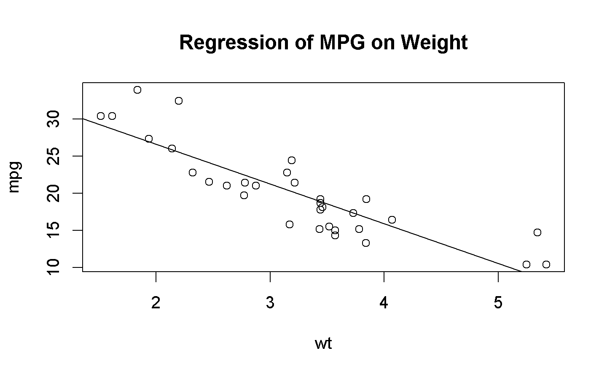
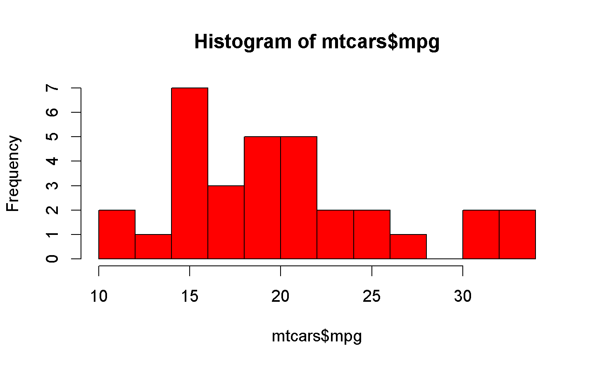
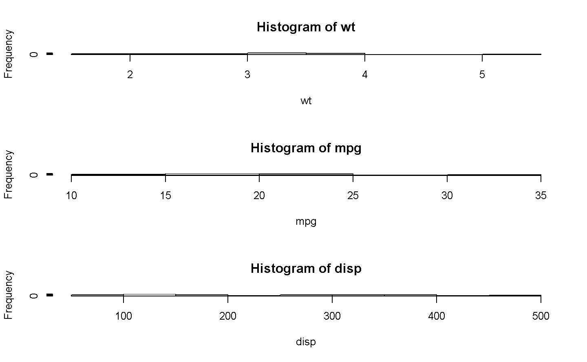
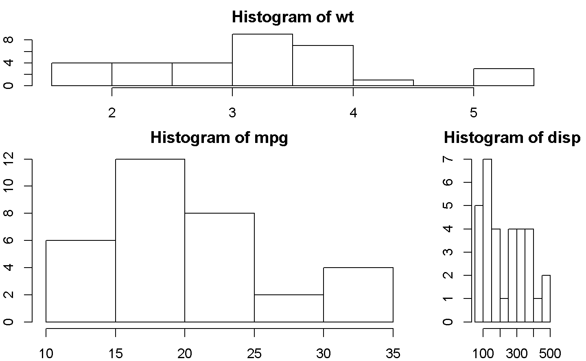
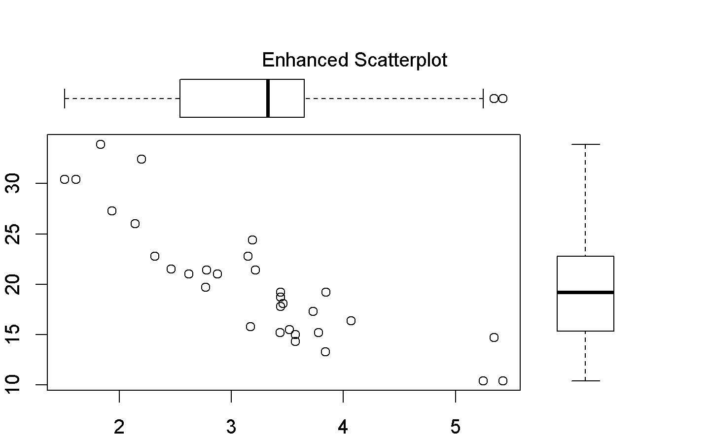
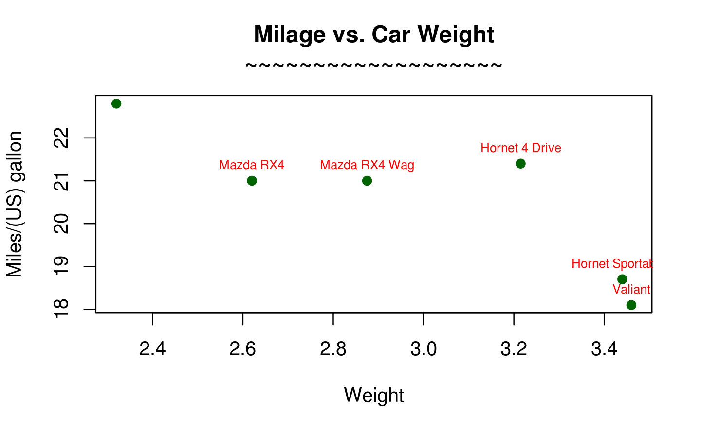
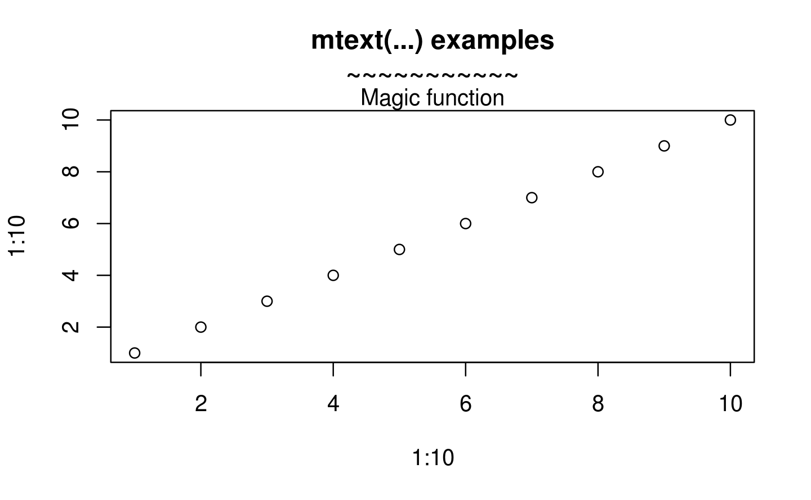
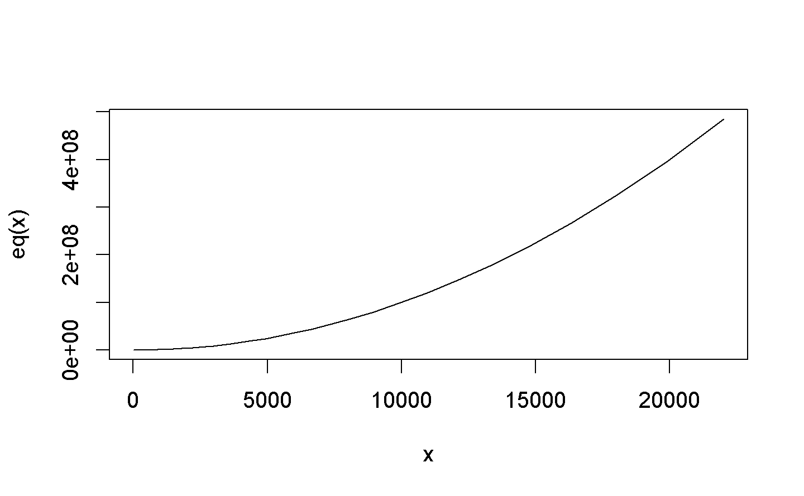
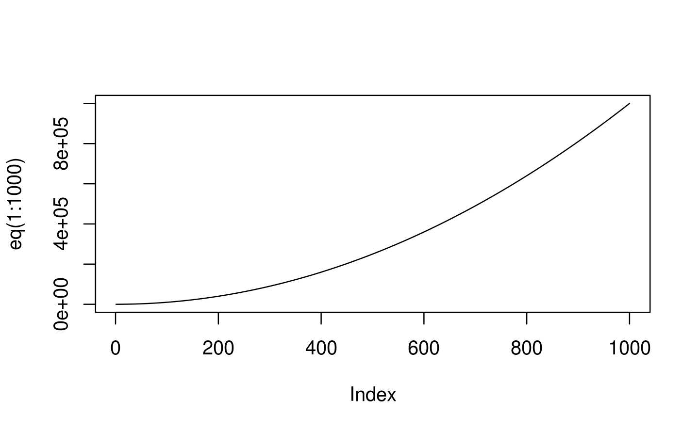

Chapter 8 Basic Plot
8.1 reference
windows() ## create window to plot your file ## … your plotting code here …
dev.off()
Note:
This will delete your current plots in the RStudio Plots Pane. If you have multiple graphics devices open, repeat this command until the output displays null device.
8.2 basic
Creating a Graph In R, graphs are typically created interactively.
8.2.1 Creating a Graph
The following object is masked from package:ggplot2:
mpg
The plot( ) function opens a graph window and plots weight vs. miles per gallon. The next line of code adds a regression line to this graph. The final line adds a title.
plot example click to view
Saving Graphs
You can save the graph in a variety of formats from the menu
File -> Save As.
You can also save the graph via code using one of the following functions.
| Function | Output to |
|---|---|
| pdf(“mygraph.pdf”) | pdf file |
| win.metafile(“mygraph.wmf”) | windows metafile |
| png(“mygraph.png”) | png file |
| jpeg(“mygraph.jpg”) | jpeg file |
| bmp(“mygraph.bmp”) | bmp file |
| postscript(“mygraph.ps”) | postscript file |
See input/output for details.
Viewing Several Graphs Creating a new graph by issuing a high level plotting command (plot, hist, boxplot, etc.) will typically overwrite a previous graph. To avoid this, open a new graph window before creating a new graph. To open a new graph window use one of the functions below.
| Function | Platform |
|---|---|
| windows() | Windows |
| X11() | Unix |
| quartz() | Mac |
You can have multiple graph windows open at one time. See help(dev.cur) for more details.
8.3 Histograms and Density Plots
8.3.1 Histograms
You can create histograms with the function hist(x) where x is a numeric vector of values to be plotted. The option freq=FALSE plots probability densities instead of frequencies. The option breaks= controls the number of bins.
8.3.1.2 Colored Histogram with Different Number of Bins

colored histogram click to view
8.3.1.3 Add a Normal Curve (Thanks to Peter Dalgaard)
x <- mtcars$mpg
h<-hist(x, breaks=10, col="red", xlab="Miles Per Gallon",
main="Histogram with Normal Curve")
xfit<-seq(min(x),max(x),length=40)
yfit<-dnorm(xfit,mean=mean(x),sd=sd(x))
yfit <- yfit*diff(h$mids[1:2])*length(x)
lines(xfit, yfit, col="blue", lwd=2)histogram with normal curve click to view
Histograms can be a poor method for determining the shape of a distribution because it is so strongly affected by the number of bins used.
To practice making a density plot with the hist() function, try this exercise.
8.3.2 Kernel Density Plot
Kernal density plots are usually a much more effective way to view the distribution of a variable. Create the plot using plot(density(x)) where x is a numeric vector.

simple density plot click to view
8.3.2.1 Filled Density Plot
d <- density(mtcars$mpg)
plot(d, main="Kernel Density of Miles Per Gallon")
polygon(d, col="red", border="blue")
colored density plot click to view
8.3.3 Comparing Groups VIA Kernal Density
The sm.density.compare( ) function in the sm package allows you to superimpose the kernal density plots of two or more groups. The format is sm.density.compare(x, factor) where x is a numeric vector and factor is the grouping variable.
8.3.3.1 Compare MPG distributions for cars with 4,6, or 8 cylinders
library(sm)
attach(mtcars)
#create value labels
cyl.f <- factor(cyl, levels= c(4,6,8),
labels = c("4 cylinder", "6 cylinder", "8 cylinder"))
#plot densities
sm.density.compare(mpg, cyl, xlab="Miles Per Gallon")
title(main="MPG Distribution by Car Cylinders")
#add legend via mouse click
colfill<-c(2:(2+length(levels(cyl.f))))
legend(locator(1), levels(cyl.f), fill=colfill)8.4 Combining Plots
R makes it easy to combine multiple plots into one overall graph, using either the par( ) or layout( ) function.
With the par( ) function, you can include the option mfrow=c(nrows, ncols) to create a matrix of nrows x ncols plots that are filled in by row. mfcol=c(nrows, ncols) fills in the matrix by columns.
The following objects are masked from mtcars (pos = 3):
am, carb, cyl, disp, drat, gear, hp, mpg, qsec, vs, wtThe following object is masked from package:ggplot2:
mpgpar(mfrow=c(2,2))
plot(wt,mpg, main="Scatterplot of wt vs. mpg")
plot(wt,disp, main="Scatterplot of wt vs disp")
hist(wt, main="Histogram of wt")
boxplot(wt, main="Boxplot of wt")
dev.off()null device
1

2 x2 layout click to view
The following objects are masked from mtcars (pos = 3):
am, carb, cyl, disp, drat, gear, hp, mpg, qsec, vs, wtThe following objects are masked from mtcars (pos = 4):
am, carb, cyl, disp, drat, gear, hp, mpg, qsec, vs, wtThe following object is masked from package:ggplot2:
mpgnull device
1

3 x 1 layout
函數 layout( ) 的使用方法為 layout(mat) 其中 mat 的元素用來指定圖形號碼。例如分成4個格子,順序為左右上下(byrow=TRUE) 1在第一ROW,占用[1,1]-[1,2],2,3,分別占用[2,1]和[2,2]
The following objects are masked from mtcars (pos = 3):
am, carb, cyl, disp, drat, gear, hp, mpg, qsec, vs, wtThe following objects are masked from mtcars (pos = 4):
am, carb, cyl, disp, drat, gear, hp, mpg, qsec, vs, wtThe following objects are masked from mtcars (pos = 5):
am, carb, cyl, disp, drat, gear, hp, mpg, qsec, vs, wtThe following object is masked from package:ggplot2:
mpgnull device
1

Optionally, you can include widths= and heights= options in the layout( ) function to control the size of each figure more precisely. These options have the form widths= a vector of values for the widths of columns heights= a vector of values for the heights of rows.
Relative widths are specified with numeric values. Absolute widths (in centimetres) are specified with the lcm() function.
par(mar = rep(2, 4))
# One figure in row 1 and two figures in row 2
# row 1 is 1/3 the height of row 2
# column 2 is 1/4 the width of the column 1
attach(mtcars)The following objects are masked from mtcars (pos = 3):
am, carb, cyl, disp, drat, gear, hp, mpg, qsec, vs, wtThe following objects are masked from mtcars (pos = 4):
am, carb, cyl, disp, drat, gear, hp, mpg, qsec, vs, wtThe following objects are masked from mtcars (pos = 5):
am, carb, cyl, disp, drat, gear, hp, mpg, qsec, vs, wtThe following objects are masked from mtcars (pos = 6):
am, carb, cyl, disp, drat, gear, hp, mpg, qsec, vs, wtThe following object is masked from package:ggplot2:
mpglayout(matrix(c(1,1,2,3), 2, 2, byrow = TRUE),
widths=c(3,1), heights=c(1,2))
hist(wt)
hist(mpg)
hist(disp)
multiplot layout with fine control click to view
See help(layout) for more details.
Creating a figure arrangement with fine control In the following example, two box plots are added to scatterplot to create an enhanced graph.
Warning in par(fig = c(0, 0.8, 0, 0.8), new = TRUE): calling par(new=TRUE)
with no plot
plot(mtcars$wt, mtcars$mpg, xlab="Car Weight",
ylab="Miles Per Gallon")
par(fig=c(0,0.8,0.55,1), new=TRUE)
boxplot(mtcars$wt, horizontal=TRUE, axes=FALSE)
par(fig=c(0.65,1,0,0.8),new=TRUE)
boxplot(mtcars$mpg, axes=FALSE)
mtext("Enhanced Scatterplot", side=3, outer=TRUE, line=-3)To understand this graph, think of the full graph area as going from (0,0) in the lower left corner to (1,1) in the upper right corner. The format of the fig= parameter is a numerical vector of the form c(x1, x2, y1, y2). The first fig= sets up the scatterplot going from 0 to 0.8 on the x axis and 0 to 0.8 on the y axis. The top boxplot goes from 0 to 0.8 on the x axis and 0.55 to 1 on the y axis. I chose 0.55 rather than 0.8 so that the top figure will be pulled closer to the scatter plot. The right hand boxplot goes from 0.65 to 1 on the x axis and 0 to 0.8 on the y axis. Again, I chose a value to pull the right hand boxplot closer to the scatterplot. You have to experiment to get it just right.
fig= starts a new plot, so to add to an existing plot use new=TRUE.
You can use this to combine several plots in any arrangement into one graph.
8.5 Add texts within the graph
The text() function can be used to draw text inside the plotting area. A simplified format of the function is :
text(x, y, labels) x and y: 文字座標; labels: 例如 “a label”
範例 :
d<-head(mtcars)
plot(d[,'wt'], d[,'mpg'],
main="Milage vs. Car Weight\n~~~~~~~~~~~~~~~~~~~",
xlab="Weight", ylab="Miles/(US) gallon",
pch=19, col="darkgreen")
text(d[,'wt'], d[,'mpg'], row.names(d), cex=0.65,pos=3,col="red") 8.5.1 Add text in the margins of the graph
在圖形周圍給文字:
mtext(text, side=3)
text : 例如“a label”
side : 哪一側 :
順時針
1: 下
2: 左
3: 上
4: 又
範例 :
8.5.2 Add mathematical annotation to a plot
plot(1:10, 1:10,
main="text(...) examples\n~~~~~~~~~~~")
text(4, 9, expression(hat(beta) == (X^t * X)^{-1} * X^t * y))
text(7, 4, expression(bar(x) == sum(frac(x[i], n), i==1, n)))
8.6 函數畫圖
 問題是如果x座標的增加不是1單位?

 問題:解釋為何錯誤
Error in y(x):
could not find function "y"
問題:如何修正下面的錯誤?
solution: